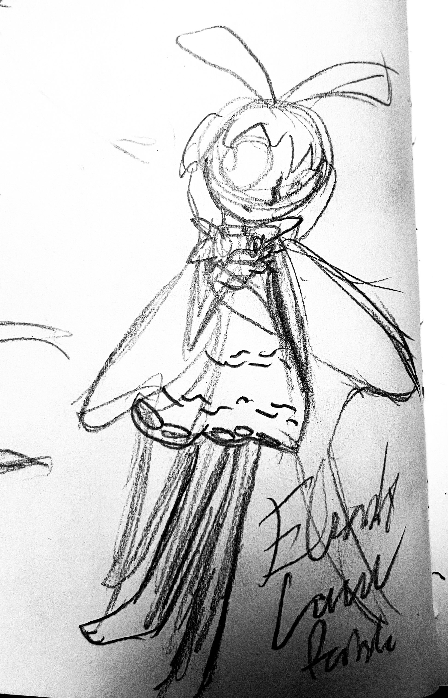
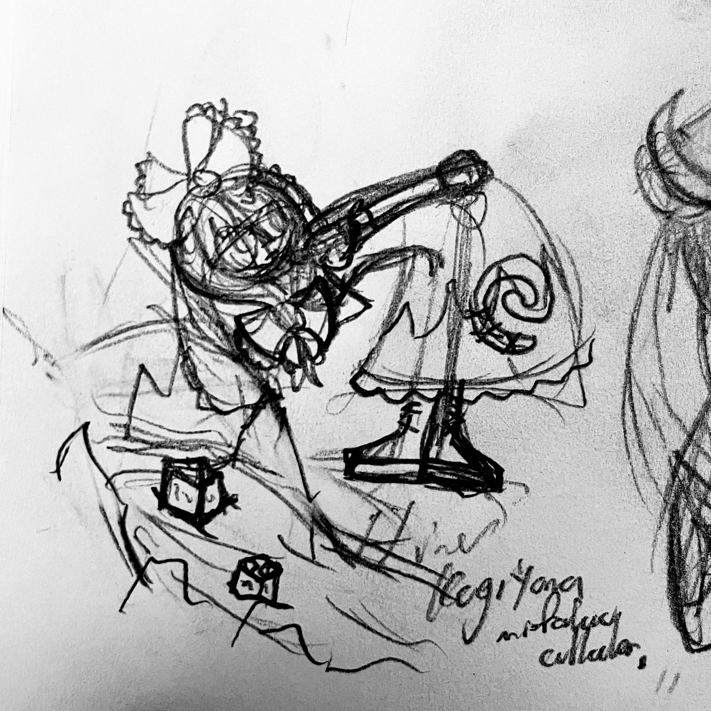
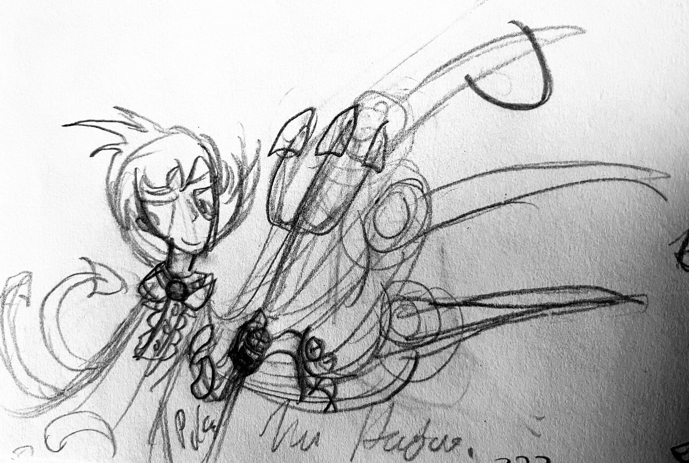
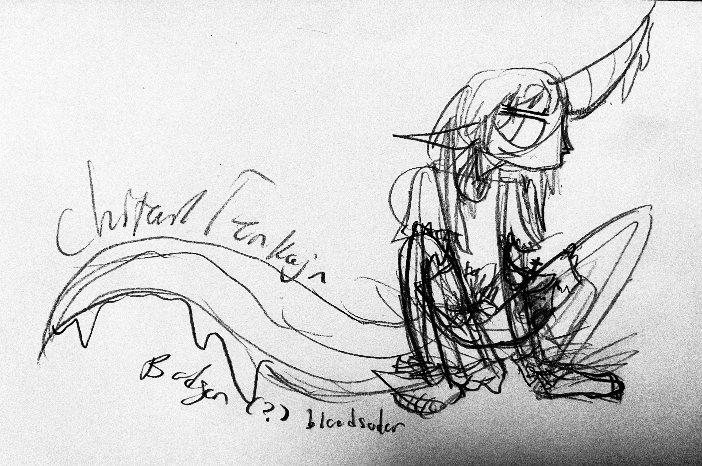

JULY 2024-NOW ART
21/07/2025
Some kind of monitor lizard dragony guy. Practicing volume.
26/06/2025
Underwater stargazing.
I am really proud of how this doodle turned out!! I just love mermaids. Any kind. Can't get enough of 'em.


14/07/2025
PANTY AND STOCKING!!! Holy fuck I can't believe this show's back.
Didja know the original (well, not original original, but...) announcement for season 2 was on my actual birthday a couple years ago? 'S true.
If you're not familiar--this show's basically what you'd get if you got Turbonegro to write Pretty Cure, and it looked like a 2000s thickline cartoon, but also an 80s underground comix series by some drugged-out L.A. crust punk, but also also a very fashion-focused shoujo series, and it had all the psuedofeminist attitude of a particularly nasty L7 song, and it was Japanese, and there were so so many dick jokes. In episode 6 there's a 'Seth McFarlane Death Pose' joke, years before anyone on the internet started making those. There's a Transformers parody. There's a fucking Baz Luhrman homage and Quadrophrenia references and the main characters drive around in the Pussy Wagon from Kill Bill. It is the most stylish thing ever put to TV animation and it is also completely fucking insane.
I watched this when I was 12 at the behest of my best friend, which is both too young entirely and the exact perfect age to watch it. I'm pretty sure I sustained permanent brain damage as a result but I was also lead down the path that would lead me to my current fascinations with underground comix, street art, terrible B-movies no human being should ever watch, hyper-cynical ultra-cool 90s postmodernist literature and 'low-brow art' in general. And not to mention magical girls!!
I have a lot more to say on the subject but you'll have to wait for the mahou shoujo page to go up. Soon...
Last one based off of this image and the third is based off of the old Neil Cicierega mermaid comic (background text/Brief's dialogue is just some shit I came up with about T. Rex, love that he's canonically a music nerd.) Also I will continue to insist on Brief being a Mod until textually proven otherwise Yeah I know it's a Ghostbusters reference but I can't help but read his outfit as a stylized motorcycle suit, the sorta thing a very safety-conscious vespa rider might wear... he's even covered it in little pins n' patches, cmon. And um something something Harold and Maude thematic connections ... don't look at me.

30/06/2025
Some hyperformal cutesy animal friends! Thinkin 'bout Tamala 2010 again, among other things.


30/06/2025
Magical dragons.
These sorts of things were all I drew as a kid and I still revert back to it when I wanna doodle and don't know what to draw.
 


12/02/2025
Assorted touhous. Partially picked via random generator and partially picked from my own list of favourites.
From my obsidian vault:
'My understanding of Gensokyo as a setting is an extremely rigid sort of classical-fairytale-tone world which has adapted a series of self-correcting systems (social moores, individual forces, simple rules of magic...), almost like a magickal immune system, that keep it from changing in any meaningful way over the ages. As long as a person stays in her 'lane' she is able to continue living in the unhurried, peaceful fashion typically imagined: fairies play tricks on each other and on humans, farmers and so on live peacefully in their human village... But as soon as anything steps out of that 'order' (an Incident occurs, a smaller yokai picks a fight with someone she shouldn't've, a human wanders off into the unknown...) things can become extremely dark and extremely violent extremely quickly. Through this things return to their original peaceful state, or an approximation of it.
Spell card usage factors into this again--while allowing the 'offending' entity to stick around might seem like a recipe for disaster, the spell card system would allow them to be taught a real lesson without destroying them-- thus keeping their 'place' the same. Rather than describing it as a magical nature reserve, as is typically done, I might describe Gensokyo as a magical terrarium--one of those closed-off ones with the shrimp and plants and water, that can sustain itself with no or very little outside intervention for years and years.
Mokou and Kaguya are my favourites in part because, well, toxic yuri is enticing to all sentient beings but also because they embody this so well--obviously the literal immortality but moreso that they're both total anomalies out of time and fable, the exiled moon-princess and the forgotten human immortal, and Gensokyo works it's magic so that even they are brought into a mutualistic 'peaceful' (horrifically violent) harmony that can continue forever without interruption and that can protect itself from outside influence... like it naturally stabilizes everything within itself through path of least resistance.'
Touhou girls are fun to draw because even as bad as I am at drawing humanoid characters, it still feels like an improvement over the source art in some ways, so it's naturally encouraging where other fanart can be kinda taxing on my art-esteem so to speak.
Trying a new thing out with a 'faux-scanning' trick. Makes some sketches look nicer and others look like shit. Kinda neat.
14/12/2024
"Then, I turn to her;
her face is screwed up in this
agonizing, painful, crying stare;
her head begins to spark as water lines her face--"
(and the punk-rock past-tense version here)
YIIK I.V. is out, and the jury is in: This is one of the most stylish, musically-unique (and jammin'!), genuinely fun, entrancing games I have ever played.
To be clear: I do not play games for long periods of time at once; my average playtime in a session on anything is usually, like, a half-hour or so.
I just played this game for 2 hours straight, taking detailed story notes the whole time, and then had to force myself to stop so I could get other things I have to do done, and then put off doing those so I could draw this fanart with a kind of formality I haven't bothered with in art since middle-school. I can legitimately count the number of times I've been glued to the screen like this on one hand.
I'm one of those people who's been semi-fascinated by this game's original flawed-yet-unique form for (jesus has it really been) 5 years or so, and seeing a fully-realized GOOD version of it is blowing my mind--moreso than I thought it would, by appealing to my tastes so strongly in a way the original never did.
If YIIK was once a semi-common Earthbound-inspired JRPG, it is now the world's first and only Douglas Coupland-esque, Happy Birthday Wanda June-referencing, hyperstylish-hyperformal surrealist nightmare JRPG.
Play it. Play it now.
4/12/2024
A (barely legible) sneak-peek at the artistic process: figuring out consistency and finer points in Badgersaurus design. Sometimes I forget how much I love drawing her. I plan to do more comix projects soon, practicing lots of stuff in preparation for that.
The shirt originates from this edit (the original was referring to violating the Pennsylvania state law against sodomy, if you're curious. God do I love old gay rights shit, so cool.)
28/11/2024
Basic Hisone and Masotan 3DS theme I made. Top is official promo art, bottom a screencap of the intro. I hastily recreated the Gifu Air Base OTF logo as a vector for the folder icons using a photo of an iron-on patch as basis. It plays Le Temps de la Rentree as BGM, of course. This was a fun little exercise in using weird software for really specific things, might do another one in the future.
Tested working on my beat-to-shit old 2DS, might upload it for download later.
26/11/2024
Predator and prey commuting home after a long day of filming for National Geographic.
The guy on the left is a gerenuk, the other one's a spotted hyena.
I just wanted to make something sleek and simple and fun. Sorta BNA inspired? I haven't watched it yet but it's been in the back of my mind.
How long has it been since I drew something with a proper background? I have no idea. And I have even less idea of how long it's been since I shaded anything. Nothing fancy on this, I'm basically relearning it from the ground up, but approaching from the idea of drawing light rather than drawing shadows really helps.
19/09/2024
A lemur artist. Best known for his series of 'fossa paintings', exploring the nature of violence in natural society through abstract imagery, his works have been featured in the MMOMA (Madagascar Musuem of Modern Art) and in private collections worldwide.
23/08/2024
"Moi j'aimerai longtemps/lorsque reviens le temps/Le temps de la rentree..."
A design based off the severely underrated anime Hisone and Masotan, and old motorcycle graphics, which have become a minor visual fascination of mine recently.
I am so proud of how this turned out, I feel like I'm really starting to find my groove with digital art after years of thinking I just can't wrap my head around it. There's like one thing here I'm finicky about at my current skill-level and it's so minor it's not worth mentioning. Hard work pays off!
This show is so, so good and really I think it's lack of popularity is just due to unlucky circumstance (Netflix-only release overseas, hard-to-parse official subtitles (seriously please watch with fansubs), airing in the weird bridge years between 2000-2010s 'anime fan' culture and modern widespread popularity of anime as a replacement for the genre crap Hollywood isn't making, typical weeb misogyny.) It's stylish, it's shmaltzy, it's super-sweet, it's almost a magical girl show with dragons about self-improvement as a form of self-love and how relationships help and hurt people simultaneously and it fucking rocks.
It's dragons occupy one of the most interesting spaces I've seen such beasts in in non-folkloric fiction--to go into detail would be spoiling it, I think, and the more blind you watch this the better. They are so damn cute too. Futomomo's my favourite I think but I would die for any of them. Even the lyrics of the ED (a cover of the France Gall song I linked above) have a bunch of interesting readings relating to the show's themes, I think. I wish I could spoiler tag on my site because I am itching to talk more about this show!!
The 'White Hearts' title is a slight variation on the show's describing the D-pilot personality types as 'white lovers', pure of heart but 'blank' in terms of self-identity and desperate for approval and affection; I thought the original phrasing might come off a little worrying next to the motorcycle imagery though :b. Here's an alternate version that calls them the Gifu Air Base Dragonriders Club because I liked the sound of that too and couldn't decide.